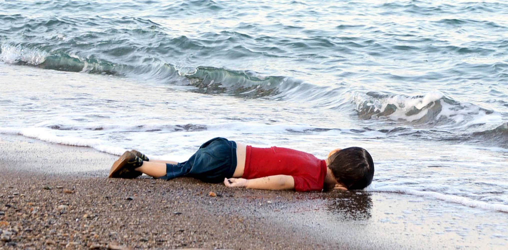
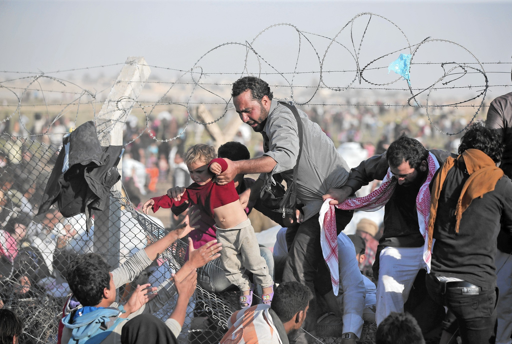
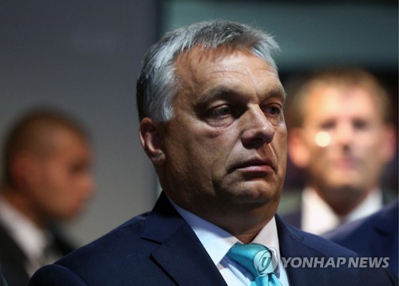
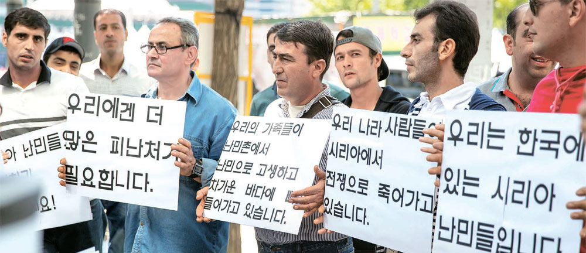

-

2015년 9월 2일
터키의 한 휴양지 해변에 떠오른
난민 어린이 '아일란 쿠르디'끊이지 않는 전쟁과 기후 이상으로 점증하는 난민
-

"난민 쿼터제"
="난민 할당제"
유럽 연합이 연합 국가에 합법적으로
수용해야하는 난민의 수를 할당하는 제도그러나
-

헝가리 총리 "법원 결정은 존중…난민은 못 받아"
난민 강제 할당으로 인한
주권 침해를 주장하며일부 유럽 국가는 난민 수용을
거부하고 있다.그렇다면 대한민국은?
-

"한국, 난민신청 6년새 18배 급증…지위인정은 1.54%뿐"
-
난민
인가 인가
수용
반대
당신의 생각은?
-

출처 : 연합뉴스